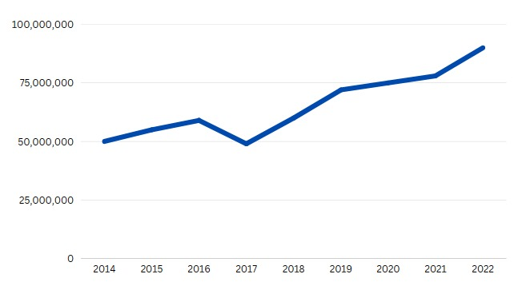

TechConnect

-
Deskripsi:
TechConnect adalah sebuah usaha sosial berukuran mikro yang berfokus pada penyediaan akses teknologi dan pelatihan TIK di daerah terpencil. Kami percaya bahwa teknologi dapat menjadi alat yang kuat untuk mengatasi kesenjangan dan memberdayakan masyarakat yang kurang beruntung secara ekonomi. Kami akan mengoperasikan pusat-pusat pelatihan TIK di desa-desa terpencil, dilengkapi dengan fasilitas komputer dan akses internet. Melalui kursus yang disesuaikan dengan tingkat pemahaman masyarakat, kami akan mengajarkan keterampilan dasar dalam penggunaan komputer, internet, pengolahan data, dan aplikasi produktivitas. Selain itu, kami akan membangun platform daring yang akan memfasilitasi kolaborasi antara masyarakat, menghubungkan mereka dengan peluang ekonomi seperti pekerjaan jarak jauh, pelatihan online, dan akses informasi penting. Platform ini juga akan menjadi tempat bagi inovator lokal untuk berbagi ide dan mengembangkan solusi teknologi yang relevan dengan tantangan di daerah mereka.
-
Visi:
Menghubungkan dan memberdayakan masyarakat di daerah terpencil melalui teknologi, menciptakan akses kesempatan yang lebih luas, dan meningkatkan kualitas hidup.
-
Misi:
-
Akses Teknologi untuk Semua: Menyediakan akses ke teknologi informasi dan komunikasi (TIK) kepada masyarakat di daerah terpencil yang sebelumnya tidak terjangkau, untuk meningkatkan akses informasi, pendidikan, dan peluang ekonomi.
-
Pelatihan dan Pemberdayaan: Mengadakan pelatihan TIK dan keahlian digital bagi masyarakat setempat, sehingga mereka dapat mengambil manfaat maksimal dari teknologi dan memperluas peluang kerja.
-
Inovasi Berkelanjutan: Mendorong inovasi lokal dengan membantu masyarakat mengembangkan solusi teknologi yang sesuai dengan kebutuhan dan potensi daerah mereka.
-
Laba Bersih per Tahun
Kuota investasi: Rp 30.000.000
Pelajari Lebih Lanjut >
(Laporan Keuangan, etc)